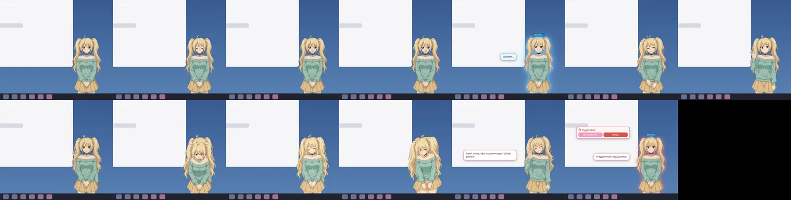
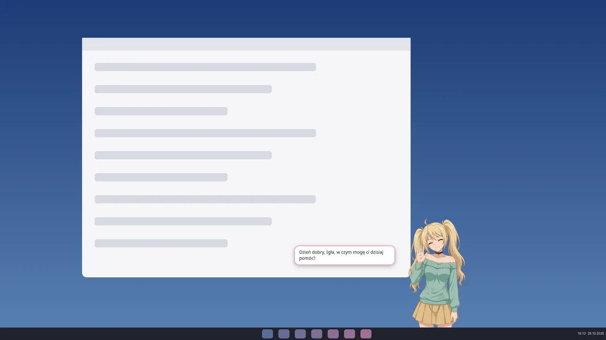
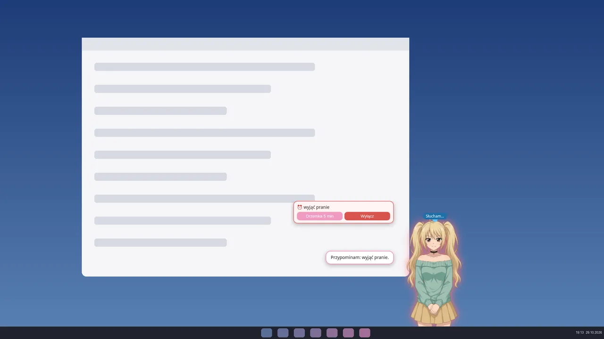
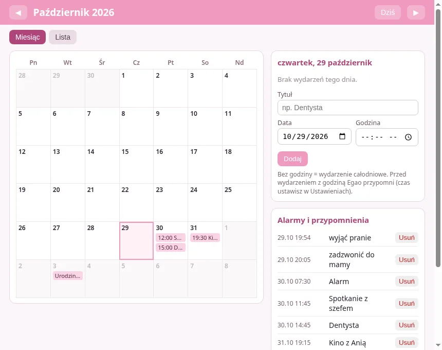

Co potrafi Egao
🎙️ „Hej Egao”
Rozumie wyłącznie mowę po polsku. Na hasło budzi się i odpowiada „Tak, słucham?”. Bez mikrofonu: Ctrl+Alt+E i piszesz.
👋 Powitanie z imieniem
Po starcie Windows macha i mówi „Dzień dobry, [twoje imię], w czym mogę ci dzisiaj pomóc?”.
🎮 Programy i gry
„Uruchom Spotify”, „włącz Minecrafta” – programy, skróty z pulpitu, gry ze Steama i Epic.
🌐 Przeglądarki i strony
„Otwórz YouTube w Chrome” – własna lista stron i przeglądarek w ustawieniach. Szuka też informacji w sieci.
📁 Foldery
„Otwórz folder faktury”, „otwórz pobrane”, „pokaż kosz”.
📅 Kalendarz i alarmy
„Przypomnij mi za 20 minut”, „co mam w piątek?” – wydarzenia, budziki i drzemka głosem.
🧠 Pamięć lokalna
Pamięta rozmowy na twoim komputerze, a często używane polecenia wykonuje od razu, bez AI.
💤 Żywa postać
Mruga, mówi, a po dłuższej ciszy zasypia na stojąco. Chowa się, gdy uruchomisz grę lub film na pełnym ekranie.
⚙️ Autostart do wyboru
Sam decydujesz, czy Egao włącza się razem z Windowsem, czy uruchamiasz ją ręcznie.
Jak wygląda




Wymagania
- Windows 10 lub 11, 64-bit (x64).
- Około 1 GB wolnego miejsca na dysku.
- Mikrofon (do komend głosowych; bez niego można pisać).
- Microsoft Visual C++ Redistributable (x64) – jeśli głos Egao się nie odzywa, zainstaluj go ze strony Microsoftu.
- Internet tylko do AI (Gemini) i wyszukiwania – reszta działa offline.
Instalacja
Sposób A – instalator (zalecany)
- Pobierz
Egao-Instalator-1.1.0-x64.exei sprawdź sumę SHA256. - Uruchom plik i klikaj „Dalej”. Na stronie „Uruchamianie” zdecyduj, czy Egao ma startować razem z Windowsem.
- Przy pierwszym uruchomieniu wpisz swoje imię i kliknij „Gotowe”.
- Zezwól na dostęp do mikrofonu i powiedz wyraźnie „Hej Egao”.
Sposób B – wersja przenośna (.zip)
- Pobierz
Egao-1.1.0-portable-x64.zip, kliknij prawym przyciskiem → „Wyodrębnij wszystko…”. - Uruchom
Zainstaluj.bat(albo od razuEgao\Egao.exebez instalacji). Szczegóły w plikuCZYTAJ-TO.txt.
🛡️ Ostrzeżenie „System Windows ochronił ten komputer” (SmartScreen)
Egao nie ma płatnego certyfikatu podpisu, więc Windows pokaże niebieskie okno. To normalne dla małych, niepodpisanych programów. Kliknij „Więcej informacji” → „Uruchom mimo to”. Zrób to tylko wtedy, gdy suma SHA256 pobranego pliku zgadza się z tą poniżej.
🔑 Darmowy klucz Gemini (opcjonalny)
Do swobodnej rozmowy Egao używa darmowego AI Google Gemini. Klucz utworzysz na aistudio.google.com/apikey („Create API key”) i wkleisz w Ustawieniach Egao → „Klucz API”. Bez klucza działają programy, gry, foldery, strony, kalendarz, alarmy i proste wyszukiwanie. Darmowy plan Google ma limity i może wykorzystywać wysłane teksty do ulepszania usług – nie dyktuj haseł ani prywatnych danych.
Prywatność
- 🎙️ Rozpoznawanie mowy i głos Egao działają lokalnie na twoim komputerze – nagrania nie są nigdzie wysyłane.
- 🧠 Pamięć rozmów, kalendarz i ustawienia zapisują się tylko u ciebie (
%APPDATA%\Egao); możesz je wyczyścić w Ustawieniach. - 🌐 Do internetu trafia wyłącznie tekst twojego polecenia wysyłany do Gemini (jeśli dodasz klucz) oraz zapytania wyszukiwania.
- Brak kont, reklam i telemetrii.
Sumy kontrolne SHA256
Suma kontrolna pozwala sprawdzić, że pobrany plik jest dokładnie tym, który został opublikowany i nikt go nie podmienił ani nie uszkodził.
| Plik | SHA256 |
|---|---|
Egao-Instalator-1.1.0-x64.exe | 1664e7f00ffee8a9bf362e75bba1a4b02e1db010301dea6658a5a8eaf8aac17f |
Egao-1.1.0-portable-x64.zip | 52ff232d6a96f582892172f5517647f0f127d2813dacc56842986f77c5f7465f |
Jak sprawdzić w PowerShell (w folderze Pobrane):
cd $HOME\Downloads
Get-FileHash .\Egao-Instalator-1.1.0-x64.exe -Algorithm SHA256
Get-FileHash .\Egao-1.1.0-portable-x64.zip -Algorithm SHA256Wynik w kolumnie Hash musi być identyczny jak w tabeli (wielkość liter nie ma znaczenia). Szybkie porównanie jednym poleceniem:
(Get-FileHash .\Egao-Instalator-1.1.0-x64.exe).Hash -eq '1664e7f00ffee8a9bf362e75bba1a4b02e1db010301dea6658a5a8eaf8aac17f'Powinno wyświetlić True. Plik SHA256SUMS.txt jest też dołączony do wydania.
Problemy?
To pierwsze wydanie na Windows – jeśli coś nie działa, zajrzyj do pliku dziennika %APPDATA%\Egao\egao.log oraz do sekcji „Rozwiązywanie problemów” w pliku CZYTAJ-TO.txt.